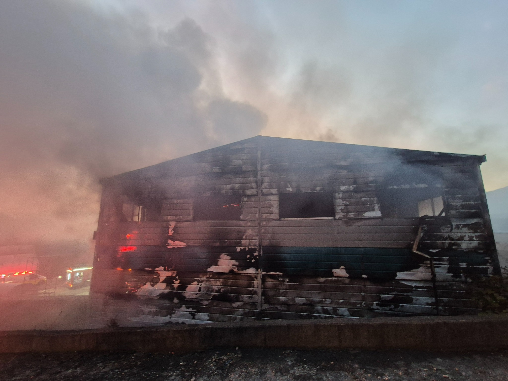

FIRE INCIDENT BRIEFING · 2026.11.03
금산 공장 화재.
현장 상황과 지원 출동.
관제기록 기준완진07:24
에스제이이엔지 · 충청남도 금산군 추부면 신평리 842-4

현장기록사진 01 / 03
외벽 연소 흔적 및 연기 발생 전경
신고 접수06:20:222026년 11월 3일
초진 / 완진06:46 / 07:24관제기록 기재시각
계룡 지원 출동차량 1대 · 1명두마화학차
인명피해없음 보고06:45:10 보고 기준
01 · INCIDENT OVERVIEW
화재 개요
- 대상
- 에스제이이엔지 공장
위생용 강화플라스틱 성형 제품 제조업(관제기록) - 위치
- 금산군 추부면 신평리 842-4
- 상황
- 06:33 공장 1동 전소 중 보고. 사진상 외벽의 광범위한 그을음·마감재 손상 및 연기 발생 확인.
- 피해·원인
- 최종 피해규모 및 화재원인은 첨부자료에서 확인되지 않음.
사진은 촬영 당시 상황이며, 완진 이후의 상태를 뜻하지 않습니다.
02 · GYERYONG SUPPORT
두마화학차 지원 출동
계룡소방서두마화학차 1대
소방위 임한영 1명
- 추가 출동지령
- 06:29:34
- 출동보고
- 06:38:00
- 현장도착
- 07:13:38
- 활동사항
- 지원 출동 및 현장도착 확인.
개별 방수·진압·잔화정리 내역은 별도 활동일지 확인 필요.
차량·시각: 관제기록 / 대원 성명·계급: 사용자 제공
03 · RESPONSE TIMELINE
주요 대응 경과
- 신고 접수
06:20:22 최초 접수
- 지원 지령
두마화학차 추가 출동
- 출동보고
두마화학차
- 초진
06:46:48 관제 입력
- 지원대 도착
두마화학차 07:13:38
- 완진
잔화정리 중 보고